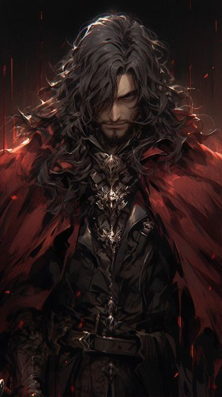

Home
Rules
Enemies
Species
Diseases
Weapons
Items
Locations
Magic
Weather
Status Effects
Stats
Alignment
Minigames
Currency
Vampire Prince
Stats:
HP: 950
MP: 20
PHY STR: 0
PHY DEF: 5
MG STR: 10
MG DEF: 15

Vampire Prince Spells:
Blood Bullet (Offensive) (Level 0): Deals 200 DMG towards the target. (Costs 5 MP to use)
Blood Bullet Barrage (Offensive) (Level 5): Deals 400 DMG to all foes present. (Costs 10 MP to use)
Regenerate (Support) (Level 15): Causes the user to recover 8% of their max HP each turn. Lasts for 3 turns. (Costs 15 MP to use)
Blood Sphere (Offensive) (Level 25): Deals 600 DMG and heals 10% of the user’s max HP. (Costs 30 MP to use)
Summon: Vampire Wolf (Support) (Level 30): Summons a Vampire Wolf with the following stats (Costs 50 MP to use):
HP: 2000
Skills:
Dark Bite: 800 DMG
Blood Rain (Support) (Level 80): Causes it to rain blood throughout the battlefield healing the user and their allies of 12% of their max HP each turn. (Costs 95 MP to use)
Mist Form (Counter) (Level 50): Transform the user’s body into smoke, causing them to be unaffected by the DMG of the non-Light and non-Holy elemental attack launched at them. (Costs 120 MP to use)
Blood Pool (Support) (Level 65): All foes present take 400 DMG each turn. While the user recovers 10% of their max HP each turn. This effect lasts for 3 turns. (Costs 170 MP to use)
Summon: Vampire Bat Swarm (Counter) (Level 75): Transforms the user into a swarm of bats, causing them to be unaffected by a single attack (Even if it is of the Holy or Light element). This spell summons 3 Vampire Bats after its use. (Costs 250 MP to use)
HP: 1200
Skills:
Vampiric Bite: Deals 400 DMG and heals 5% of the user’s current HP.
Charm (Support) (Level 85): Grants the user the
loveable
status effect for 3 turns. (Costs 340 MP to use)
Grand Summon: Castlevania (Support/Counter) (Level 100): This spell can function as either a Support skill or a Counter spell. Summons forth a gigantic, dark castle that protects the user. The user cannot be harmed until the castle has been completely destroyed. Castlevania has the following stats (Costs 1000 MP to use):
HP: 5000
Skills:
Dark Moonlight (Passive): Increases all healing and lifesteal effects from the user’s skills by 10%, and increases the DMG of all their summons’ attacks by 20%.